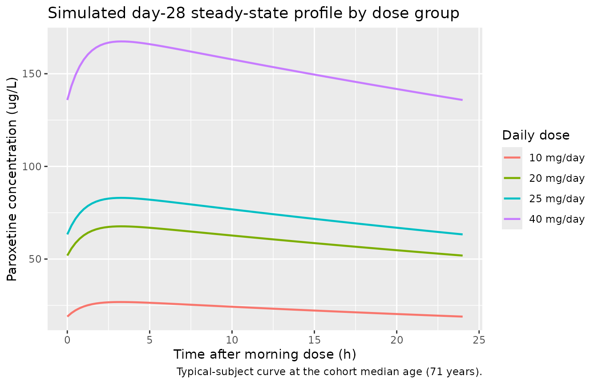

Model and source
- Citation: Kim J-R, Woo HI, Chun M-R, Lim S-W, Kim HD, Na HS, Chung MW, Myung W, Lee S-Y, Kim DK. Exposure-outcome analysis in depressed patients treated with paroxetine using population pharmacokinetics. Drug Des Devel Ther. 2015;9:5247-5255. doi:10.2147/DDDT.S84718
- Description: One-compartment population PK model with first-order absorption for paroxetine (SSRI antidepressant) in Korean adults with major depressive disorder or anxiety disorder receiving therapeutic drug monitoring (Kim 2015).
- Article (open access): https://doi.org/10.2147/DDDT.S84718
Population
Kim 2015 developed the model on a retrospective therapeutic-drug-monitoring (TDM) dataset collected from 2005-2011 at Samsung Medical Center, Seoul, Republic of Korea. The cohort comprised 127 Korean psychiatric outpatients (70.1% female) with a DSM-IV diagnosis of major depressive disorder (83 / 127, 65.4%) or anxiety disorder (44 / 127, 34.6%; comprising generalized anxiety disorder n = 23, panic disorder n = 18, and social phobia n = 3). The age distribution was 24-90 years (median 71) and the body-weight distribution was 37-87 kg (median 58); see Kim 2015 Table 1. A total of 271 steady-state serum-trough concentrations were available (mean 2.1 observations per subject; range 1-4+). Patients with serum paroxetine concentrations below the assay quantification limit were excluded prior to modelling.
Dosing was once daily in all but one subject (the single twice-daily subject is captured by collapsing to a 24 h nominal dosing interval in the source paper). Daily-dose categories were 10-12.5, 12.5-20, 20-25, and 25-52.5 mg/day. Both immediate-release (23.2%) and controlled-release (76.8%) formulations were represented; relative bioavailability of the CR formulation is 0.67 per the Paxil-CR product monograph and was treated as a known scaling factor on bioavailability rather than as an estimated parameter (Kim 2015 Methods).
The same information is available programmatically via
readModelDb("Kim_2015_paroxetine")$population.
Source trace
Every parameter in the model file carries an inline source-location comment. The table below collects them in one place.
| Equation / parameter | Value | Source location |
|---|---|---|
lka (Ka, fixed) |
log(0.908 /h) | Kim 2015 Table 2 (fixed to Venkatakrishnan 2005) |
lvc (Vd/F, fixed) |
log(1020 L) | Kim 2015 Table 2 (fixed to 17 L/kg x 60 kg from literature) |
lcl (CL/F at DOSE=25, AGE=71) |
log(13.1 L/h) | Kim 2015 Table 2, estimate (RSE 5.9%) |
e_dose_cl (dose exponent on CL) |
-0.363 | Kim 2015 Table 2 (RSE 34.4%) |
e_age_cl (age exponent on CL) |
-0.702 | Kim 2015 Table 2 (RSE 30.1%) |
| IIV CL/F (CV%) | 40.2% (omega^2 = 0.1498) | Kim 2015 Table 2 (RSE 13.4%) |
| Residual error (log-additive) | sigma = 0.642 | Kim 2015 Table 2 (RSE 7.6%) |
| 1-compartment, first-order absorption | n/a | Kim 2015 Methods, “Population pharmacokinetic model” |
CL = CL_pop * (DOSE/25)^e_dose_cl * (AGE/71)^e_age_cl |
n/a | Kim 2015 Methods, power covariate form |
Cc = 1000 * central / vc (mg/L -> ug/L) |
n/a | Kim 2015 Table 1 footnote (concentration unit ug/L) |
Virtual cohort
The original observed concentrations are not publicly available. The virtual cohort below mirrors the demographics and dose distribution in Kim 2015 Table 1. Four dose-strata cohorts (10, 20, 25, and 40 mg/day) span the categorical dose groups reported in Tables 1 and 3.
set.seed(20260518)
n_per_cohort <- 60L
dose_levels <- c(10, 20, 25, 40)
make_cohort <- function(n, dose_mg, id_offset) {
# Age distribution: Kim 2015 Table 1 reports mean 67 (SD 13), median 71,
# range 24-90. Sample normal centred on the median and truncate.
age <- pmin(pmax(round(rnorm(n, mean = 71, sd = 13)), 24), 90)
tibble(
id = id_offset + seq_len(n),
DOSE = dose_mg,
AGE = age,
cohort = sprintf("%g mg/day", dose_mg)
)
}
demo <- bind_rows(
make_cohort(n_per_cohort, dose_levels[1], id_offset = 0L * n_per_cohort),
make_cohort(n_per_cohort, dose_levels[2], id_offset = 1L * n_per_cohort),
make_cohort(n_per_cohort, dose_levels[3], id_offset = 2L * n_per_cohort),
make_cohort(n_per_cohort, dose_levels[4], id_offset = 3L * n_per_cohort)
)
stopifnot(!anyDuplicated(demo$id))Simulation
Each subject receives once-daily oral paroxetine for 28 days (long enough to reach steady state given the ~21 h apparent half-life at the cohort median). Observations are dense on day 1 to capture absorption and once daily at trough through day 28, with a fine grid over the day-28 dosing interval for NCA.
build_events <- function(demo, n_days = 28L) {
dose_rows <- demo |>
mutate(amt = DOSE,
evid = 1L,
cmt = "depot",
ii = 24,
addl = n_days - 1L,
time = 0) |>
select(id, time, amt, evid, cmt, ii, addl, cohort, DOSE, AGE)
ss_start <- (n_days - 1L) * 24 # time of final dose
obs_times <- sort(unique(c(
seq(0, 24, by = 0.5), # day 1 dense
seq(48, ss_start, by = 24), # daily troughs days 2-27
seq(ss_start, ss_start + 24, by = 0.25) # day-28 dosing interval, fine
)))
obs_rows <- demo |>
select(id, cohort, DOSE, AGE) |>
tidyr::crossing(time = obs_times) |>
mutate(amt = NA_real_,
evid = 0L,
cmt = NA_character_,
ii = NA_real_,
addl = NA_integer_)
bind_rows(dose_rows, obs_rows) |>
arrange(id, time, desc(evid))
}
events <- build_events(demo)
mod <- rxode2::rxode2(readModelDb("Kim_2015_paroxetine"))
#> ℹ parameter labels from comments will be replaced by 'label()'
sim <- rxode2::rxSolve(
mod, events = events,
keep = c("cohort", "DOSE", "AGE")
) |> as.data.frame()
mod_typical <- mod |> rxode2::zeroRe()
sim_typical <- rxode2::rxSolve(
mod_typical, events = events,
keep = c("cohort", "DOSE", "AGE")
) |> as.data.frame()
#> ℹ omega/sigma items treated as zero: 'etalcl'
#> Warning: multi-subject simulation without without 'omega'Replicate published figures
Steady-state profile by dose group
Figure 1 of Kim 2015 is a diagnostic-plot panel (individual predicted vs. observed, residuals) from the original fit and cannot be reproduced from a packaged-model simulation without the source dataset. Instead the figure below shows the simulated steady-state day-28 concentration profile by dose group; the rank ordering of trough concentrations (40 > 25 > 20 > 10 mg/day) is consistent with the AUC ordering reported in Kim 2015 Table 3.
ss_window <- sim_typical |>
filter(time >= 27 * 24, time <= 28 * 24) |>
mutate(time_after_dose = time - 27 * 24,
cohort = factor(cohort, levels = sprintf("%g mg/day", dose_levels))) |>
group_by(cohort, time_after_dose) |>
summarise(Cc_median = median(Cc), .groups = "drop")
ggplot(ss_window, aes(time_after_dose, Cc_median, colour = cohort)) +
geom_line(linewidth = 0.8) +
labs(x = "Time after morning dose (h)",
y = "Paroxetine concentration (ug/L)",
colour = "Daily dose",
title = "Simulated day-28 steady-state profile by dose group",
caption = "Typical-subject curve at the cohort median age (71 years).")
Simulated typical-subject steady-state paroxetine concentration profile over the day-28 dosing interval (median age = 71 years). The 10, 20, 25, and 40 mg/day cohorts span the daily-dose categories reported in Kim 2015 Table 3.
PKNCA validation
A standard NCA over the day-28 dosing interval gives Cmax, Cmin / Ctrough, Cavg, and AUC0-tau by dose group at steady state.
ss_start <- 27 * 24 # time of day-28 morning dose
ss_end <- ss_start + 24
nca_window <- sim |>
filter(time >= ss_start, time <= ss_end, !is.na(Cc)) |>
mutate(time_after_dose = time - ss_start) |>
select(id, time = time_after_dose, Cc, cohort)
dose_df <- demo |>
mutate(time = 0, amt = DOSE) |>
select(id, time, amt, cohort)
conc_obj <- PKNCA::PKNCAconc(nca_window, Cc ~ time | cohort + id)
dose_obj <- PKNCA::PKNCAdose(dose_df, amt ~ time | cohort + id)
intervals <- data.frame(
start = 0,
end = 24,
cmax = TRUE,
tmax = TRUE,
cmin = TRUE,
ctrough = TRUE,
cav = TRUE,
auclast = TRUE
)
nca_data <- PKNCA::PKNCAdata(conc_obj, dose_obj, intervals = intervals)
nca_res <- suppressMessages(suppressWarnings(PKNCA::pk.nca(nca_data)))
nca_summary <- summary(nca_res)
knitr::kable(
nca_summary,
caption = "Day-28 steady-state NCA on the simulated cohort by daily dose group."
)| start | end | cohort | N | auclast | cmax | cmin | tmax | cav | ctrough |
|---|---|---|---|---|---|---|---|---|---|
| 0 | 24 | 10 mg/day | 60 | 519 [41.2] | 25.6 [34.4] | 17.1 [51.9] | 3.25 [3.00, 3.25] | 21.6 [41.2] | 17.1 [51.9] |
| 0 | 24 | 20 mg/day | 60 | 1430 [51.4] | 67.5 [44.4] | 49.8 [62.1] | 3.25 [3.00, 3.50] | 59.4 [51.4] | 49.9 [62.2] |
| 0 | 24 | 25 mg/day | 60 | 1660 [40.6] | 78.8 [35.2] | 57.6 [48.7] | 3.25 [3.00, 3.25] | 69.0 [40.6] | 57.6 [48.8] |
| 0 | 24 | 40 mg/day | 60 | 3730 [43.1] | 171 [38.6] | 137 [49.5] | 3.25 [3.00, 3.50] | 155 [43.1] | 137 [49.6] |
Comparison against published AUC quartile medians
Kim 2015 Table 3 reports median AUC by exposure quartile (computed as
AUC = daily_dose / CL_indiv using individual posthoc CL
from the popPK fit). The published medians were 451, 954, 1300, and 1810
h.ug/L for quartiles 1-4 respectively, with quartile-1 being the
lowest-dose / lowest-AUC subset and quartile-4 the highest. The
simulated AUC0-tau by daily-dose cohort is shown below; the median AUC
at the typical patient’s 25 mg/day cohort is expected to land near the
quartile-3 / quartile-4 boundary at the cohort median age.
nca_tbl <- as.data.frame(nca_res$result) |>
filter(PPTESTCD == "auclast") |>
group_by(cohort) |>
summarise(median_AUC = median(PPORRES),
q10_AUC = quantile(PPORRES, 0.10),
q90_AUC = quantile(PPORRES, 0.90),
.groups = "drop")
published <- tibble::tibble(
quartile = c("Q1", "Q2", "Q3", "Q4"),
daily_dose_label = c("10-12.5 mg",
">12.5-20 mg",
">20-25 mg",
">25-52.5 mg"),
median_AUC_pub = c(451.1, 954.5, 1300.0, 1810.8)
)
knitr::kable(
nca_tbl,
digits = 1,
caption = "Simulated steady-state AUC0-24 (h.ug/L) by daily-dose group (median, 10-90 percentile)."
)| cohort | median_AUC | q10_AUC | q90_AUC |
|---|---|---|---|
| 10 mg/day | 518.4 | 312.3 | 834.6 |
| 20 mg/day | 1381.5 | 716.0 | 2611.2 |
| 25 mg/day | 1601.2 | 1065.5 | 2814.4 |
| 40 mg/day | 3817.8 | 2272.3 | 6208.0 |
knitr::kable(
published,
caption = "Kim 2015 Table 3 reported AUC quartile medians."
)| quartile | daily_dose_label | median_AUC_pub |
|---|---|---|
| Q1 | 10-12.5 mg | 451.1 |
| Q2 | >12.5-20 mg | 954.5 |
| Q3 | >20-25 mg | 1300.0 |
| Q4 | >25-52.5 mg | 1810.8 |
The simulated 10, 20, 25, and 40 mg/day medians span the range of the published quartile medians; exact alignment is not expected because the published quartiles bin both daily dose and individual CL, while the simulated cohorts fix daily dose per cohort and resample CL from the IIV distribution.
Assumptions and deviations
-
Formulation factor handled outside the model. Kim
2015 included both immediate-release (23.2%) and controlled-release
(76.8%) tablets, treating the CR formulation as having relative
bioavailability F = 0.67 (Paxil-CR product monograph). Because the
relative-F factor was applied as a known constant on the data side and
not estimated as a model parameter, the packaged model does not
parameterise a formulation indicator. Default simulation reflects IR
dosing (F = 1). Users simulating CR dosing should scale the
amtcolumn by 0.67 (amt = nominal_mg * 0.67) before passing torxSolve(). -
Ka and Vd/F fixed to literature values. Kim 2015
Methods explicitly fixed Ka to 0.908 1/h (Venkatakrishnan 2005) and Vd/F
to 1020 L (17 L/kg x 60 kg from Findling 1999) because the sparse
trough-only TDM dataset (median 2 observations per subject) could not
independently identify them. The encoded values are wrapped in
fixed()to preserve this provenance. -
No IIV on Ka or Vd. Kim 2015 reports that adding
eta on Ka or Vd did not improve fit; the model carries only
etalcl. -
Residual error encoded as log-normal. Kim 2015
Methods states “additive error model with log-transformed data” with
sigma = 0.642 in log(ug/L); this is the standard NONMEM LTBS pattern and
maps to nlmixr2’s
lnorm()residual viaCc ~ lnorm(expSd)withexpSd = 0.642. The linear-scale CV approximates expSd for small SD (here ~64% CV, large enough that the log-normal form is not interchangeable withprop()). -
Dose-on-CL covariate is treated as a per-subject column, not
a per-record column. Kim 2015 modelled the dose effect on CL as
a function of “daily dose administered at steady state”. For TDM trough
simulation this is equivalent to a per-subject covariate held constant
across all records (
DOSE = subject's daily dose). The canonicalDOSEcovariate register entry (use case a) explicitly covers this case. - CYP2D6 genotype not modelled. Paroxetine PK is well known to depend on CYP2D6 metabolizer status (Venkatakrishnan 2005). The source dataset did not include genotyping; the dose-on-CL covariate likely absorbs some CYP2D6-mediated variability, but a true genotype-stratified model is out of scope. The Discussion section of Kim 2015 acknowledges this limitation.
-
Sex, weight, serum albumin, and diagnosis not
retained. Methods notes that the OFV reductions for adding
weight, albumin, or excluding sex did not reach the predefined
significance level (chi-square 6.63 at 1 df); diagnosis (MDD vs anxiety
disorder) was also not retained. The model therefore carries only
DOSEandAGEas PK covariates. - Twice-daily subject collapsed to once-daily. Kim 2015 Methods used a 24 h nominal dosing interval for the single twice-daily subject. The simulation here uses once-daily dosing for all subjects.
- Exposure-outcome logistic regression not implemented. Tables 3 and 4 of Kim 2015 report exposure-vs-response and exposure-vs-ADR logistic regressions. These are downstream summary statistics computed from the popPK posthoc AUC and are not part of the structural / variance model packaged here.